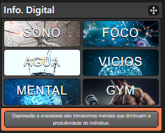

Chronos
Por meio da utilização de técnicas de estudo, ferramentas para organização de tarefas e criação de um senso de complitude no usuário, a aplicação Chronos tem seu foco no nicho dos estudantes universitários, grupo que apresenta dificuldades para conciliar seus estudos com outras atividades como por exemplo atividades físicas, relacionamentos e trabalho. Dessa forma , nosso objetivo é atuar como um suporte ao usuário para lhe fornecer maior conforto e aumentar sua produtividade.
A tela inicial da aplicação Chronos conta com 4 módulos principais: 1 - Tasklist, 2 - Gráfico, 3 - Pomodoro e 4 - Informante Digital. O modulo 1 e 2 auxiliam o usuario, gerir e lembrar a organizar seus afazeres. O módulo 3 é um cronometro (que ultiliza o renomenado método de pomodoro) auxilia a melhora do foco e atencao. E, por fim, o Informante Digital fornece dados sobre sono, foco, agua, vicios, mental e academia que informam o usuario e pode promover uma maior motivacao para realizar praticas saudaveis e funcionais em sua vida.
O vídeo a seguir traz uma apresentação do problema que a equipe está tratando e a proposta de solução.
Nesta seção são apresentadas as telas desenvolvidas para cada uma das funcionalidades do sistema
Permite o cadastro e salvamento dos dados do usário da conta, que também serão utilizados para posterior login
Permite ao usuário criar várias tasklists dentro de um dia da semana, as quais possuirão tarefas dentro de si, cujo nome e valor(importância) serão atribuídos pelo usuário.
O pomodoro é uma técnica que consiste em 25 minutos de estudo seguido por 5 minutos de descanso, repetidas vezes. No site foi feito um cronômetro que funciona de acordo com esse método de estudo.
Responsavel por mostrar informacoes que motive o usuario a buscar por desenvolvimento pessoal.

O post-it é utilizado para breves anotações e lembretes, e, como são pequenos, são fáceis de ser manuzeados e ajudam na organização.
Responsavel por mostrar o usuário seu progresso de acordo com as tarefas concluídas por ele e a pontuação que lhes foi atribuída.
Fornece ferramentas ao usuário
Altera cores predominants da aplicação
Altera imagem de fundo da aplicação
Contatos da aplicação
{ "id": 1, "nome": "Rodrigo Drummond", "email": "123@gmail.com", "senha": "12345" }
Registro das tasklists e suas tarefas
{ "id": "1" "titulo": "aeds"{ "id": "1" "nome": "lista" "valor": "4" } }
Frases que são exibidas ao usuário aleatoriamente
{ "frase1": "Um adulto deve dormir entre 7 - 9 horas por noite.", "frase2": "Um vício é um comportamento que continu asendo executado mesmo na presença de uma punição.", "frase3": "Um vício geralmente é atrelado a um gatilho [pessoa, ambiente, lugares e épocas].", "frase4": "TODO MUNDO sonha todas as noites. Voce só nao vai sonhar se não passar pela fase de sono REM.", "frase5": "Conhecimento é poder.", "frase6": "Apenas começe. Apenas faça.", "frase7": "Se exponha a luz solar de manha, isso irá ajudar na qualidade do seu sono anoite.", "fraseoito": "Cerca de apenas 5% da populaço.", "frase8": "Cerca de apenas 5% da população mundial tem Transtorno de Défit de Atenção.", "frase9": "Pessoas que tem INSÔNIA crônica tem atrofia no hipocampo, região do cérebro envolvida com formação de memória.", "frase10": "Nossos comportamentos são modulados pelo nosso ambiente.", "frase11": "Somos sensíveis as consequências dos nossos comportamento.", "frase12": "Manter-se adequadamente hidratado com água pode melhorar a concentração, o foco e o desempenho mental.", "frase13": "Nossa musculatura é naturalmente composta por cerca de 80% de agua. Portanto, se hidrate ao longo do dia.", "frase14": "Temos que beber no MÍNIMO 35 ml de agua por kg corporal", "frase15": "Depressão e ansiedade são transtornos mentais que diminuem a produtividade do individuo.", "frase16": "Fazer exercícios físicos melhoram suas funções cognitivas.", "frase17": "Um dos principais motivos da procastinação é a busca do perfeiccionismo.", "frase18": "Descansar também é fundamental para hipertrofia!", "frase19": "Busque sua melhor vesão.", "frase20": "Sua atenção é controlada por uma região no seu cérebro conhecida como cortéx pré frontal." }
Registro dos usuários do sistema utilizados para login e para o perfil do sistema
{ "id": 1, "descrição": "aniversário ana dia 4" }
Exibe nome da tarefa e sua pontuação(caso esteja concluída)
{ "id": 1, "tarefa": "lista aeds", "pontuação": "4" }
Esta lista apresenta um conjunto de perguntas e respostas comuns associadas ao projeto